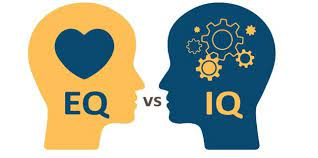

What is Emotional Intelligence?
Emotional Intelligence (EQ) is primarily the ability to manage ones own feelings so that their feelings are expressed appropriately and effectively. Addtionally, EI contains analysis skills in which the invidiual is self-aware of their feelings in regards of how it impacts them and those around them and empathetic towards others which flows onto good social/relationship management.
Emotional Intelligence is different from IQ (Intelligence quotient) is that EI measures one ability to recognize emotions within yourself and others and utilizing that awareness to make decisions. IQ is a measurement that analyzes one ability to solve problems, use logic and grasp/communicate complex ideas. A linkedin article states that it is believed that IQ accounts for only 20% of someones success in life whereas the other 80% is determined by ones EI and social intelligence. This showcases how important it is to have developed EI. It enables the individual to regulate their emotions and understand their friends & colleages better. A higher EI allows the person to build strong relationships, reduce stress in themselves & others and defuse conflict.
{kind=link}